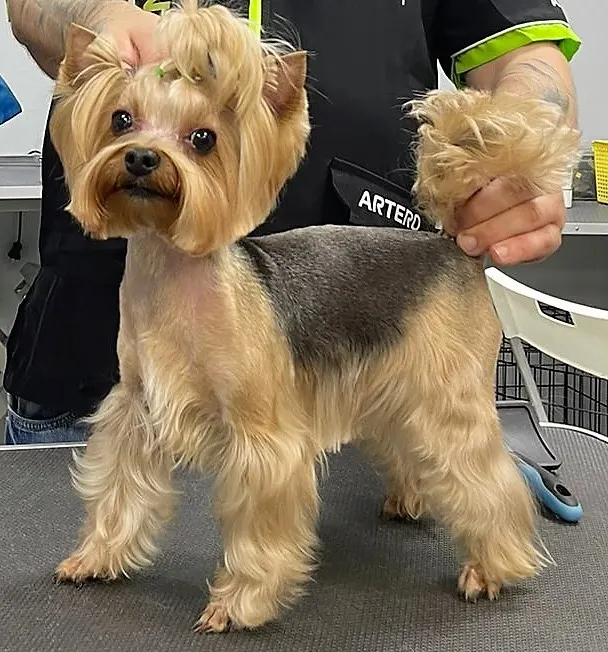
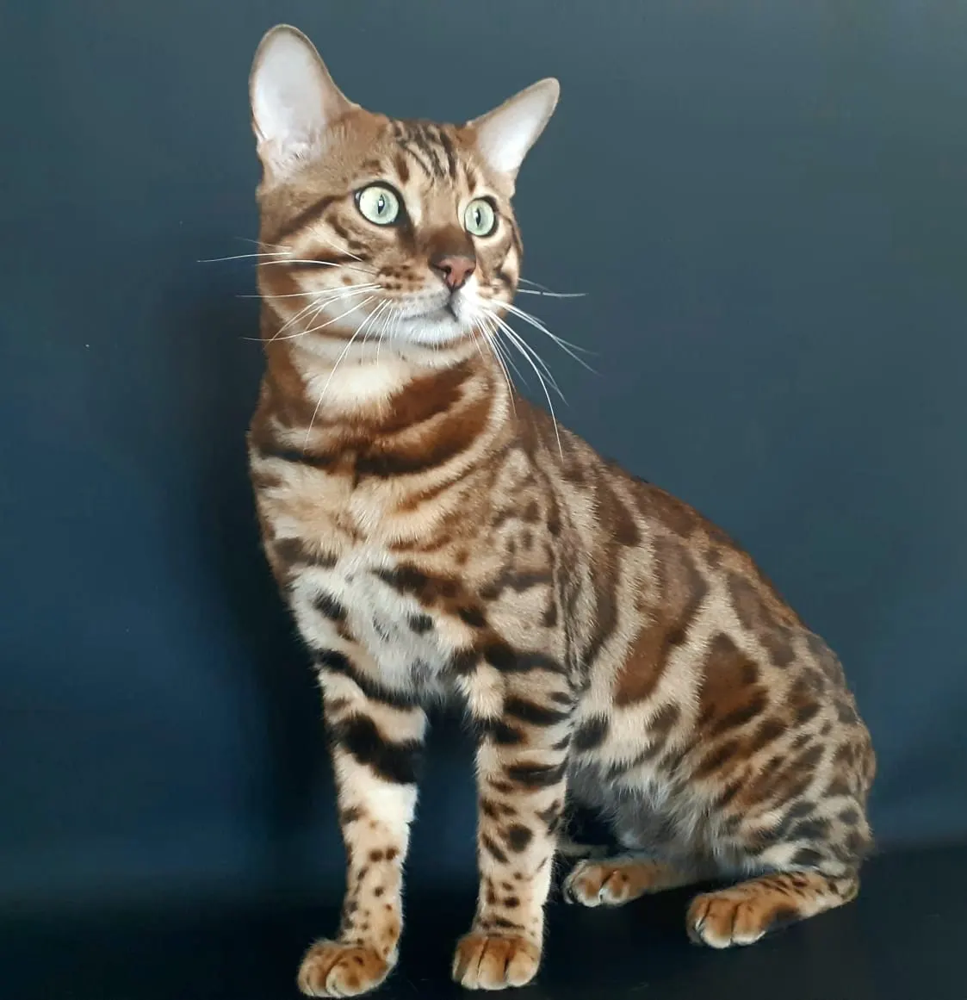
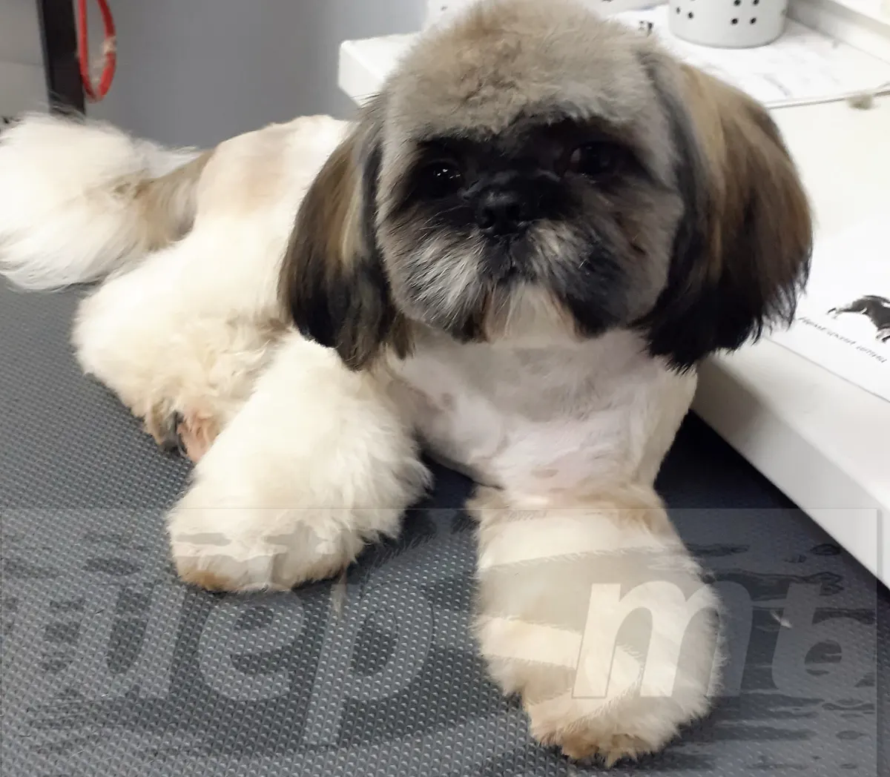
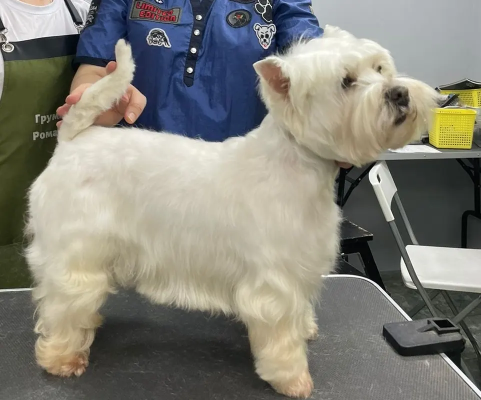

Груминг-салон · Пермь
Шерsть: груминг собак и кошек в Перми с онлайн-записью
Выберите услугу, день и время - запись в одном сообщении. Стоимость назовёт мастер после осмотра питомца.
- Запись одним сообщением
- Ждём: ежедневно, 08:00–20:00
- 5,0 и 47 отзывов на Яндекс.Картах

Услуги
Стоимость называем после осмотра: она зависит от породы, размера и состояния шерсти.
Что можно выбрать
- Груминг кошекв отзыве: работают с любыми кошкамиуточнить
- Стрижка собакна фото в карточке: стрижки собак разных породуточнить
- Мытьё и сушкав отзыве: вычесали, помыли и сделали сушкууточнить
- Вычёсывание шерстив отзыве: котику стало легче без лишней шерстиуточнить
Как записаться
Пишете нам
Расскажите, какой питомец и что нужно сделать, или выберите услугу, день и время в форме ниже.
Уточняем детали
Администратор подтверждает время и отвечает на вопросы.
Приходите с питомцем
Адрес: Пермь, улица Куйбышева, 87.



Что пишут гости
Работают с любыми кошками
В отзыве: нам отказали в записи 5 салонов из-за агрессивной кошки, а они справились.
Профессиональный подход
В отзыве: Ольга профессионал своего дела, под конец собака вообще расслабилась.
Опрятный вид
В отзыве: котик выглядит опрятно, аккуратно, пахнет вкусно.
Отзывы с Яндекс.Карт
«Хочу выразить ОГРОМНЕЙШЕЕ СПАСИБО Ольге и её напарнице Лиле! 🙏 Спасли моего кота от ужасных колтунов в шерсти. Надежды их как-то удалить уже не было, но Вы справились! 🙏 Настоящие профессионалы своего дела! 🙏 Более того, к коту было отношение как к своему 🙏 Видно, что Вы свою работу любите девочки.💞 Я искренне желаю Вам процветания и успехов в Вашей не лёгкой работе. 🙏»
Евгений Иванов · 6 июля 2025
«Очень нравится посещать грумминг, приходили во второй раз, придем еще🥰 Песель счастлив после процедуры, что не может не радовать хозяина) девушки очень милые с друзьями младшими, терпеливы. Их труд бесценен 🐶🐾»
Иван · 21 сентября 2025
«Спасибо большое Ольге за качественную работу и тёплый прием. Котику стало легче жить без всей лишней шерсти, выглядит так опрятно, аккуратно, пахнет так вкусно и выглядит счастливо🥰»
Юлия Бачурина · 24 ноября 2025
Отзывы с карточки на Яндекс.Картах.
Частые вопросы
Как записаться?
Выберите услугу, день и время в форме на странице или напишите в мессенджер. Администратор подтвердит запись.
Где вы находитесь?
Пермь, улица Куйбышева, 87. ежедневно, 08:00–20:00.
Сколько это стоит?
Стоимость называем после осмотра: она зависит от породы, размера и состояния шерсти.
Выберите время - подтвердим запись
- Адрес
- Пермь, улица Куйбышева, 87, Пермь
- Часы
- ежедневно, 08:00–20:00
- Телефон
- +7 (908) 248-44-63